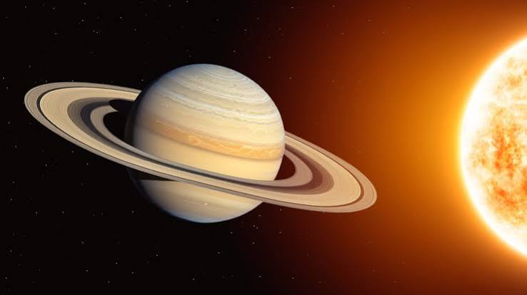
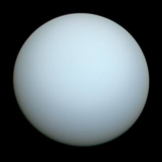
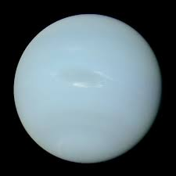

Планети-гіганти
Планети-гіганти — це чотири великі зовнішні планети Сонячної системи: Юпітер, Сатурн, Уран та Нептун. Вони значно більші за планети земної групи, не мають твердої кам'янистої поверхні, мають багато супутників і кільцеві системи.
1. Юпітер

Юпітер — найбільша планета Сонячної системи та п'ята від Сонця. Це газовий гігант, який складається переважно з водню і гелію та вирізняється смугастим забарвленням хмар.
Цікаві факти про Юпітер:
- Юпітер такий величезний, що його маса у 2,5 раза більша за масу всіх інших планет Сонячної системи разом узятих.
- На поверхні хмар Юпітера є Велика Червона Пляма — гігантський шторм, який існує вже сотні років.
- Доба на Юпітері триває лише близько 10 годин, тож він обертається навколо своєї осі швидше за будь-яку іншу планету.
2. Сатурн

Сатурн — шоста від Сонця планета та другий за розміром газовий гігант. Він найвідоміший завдяки своїм яскравим і широким кільцям, які добре видно навіть у невеликий телескоп.
Цікаві факти про Сатурн:
- Кільця Сатурна складаються з мільярдів крижаних і кам'яних уламків — від дрібних порошинок до величезних брил.
- Середня густина Сатурна менша за густину води: якби існував океан потрібного розміру, Сатурн міг би в ньому плавати.
- Серед понад сотні супутників Сатурна виділяється Титан — єдиний супутник у Сонячній системі зі щільною атмосферою та озерами з рідких вуглеводнів.
3. Уран

Уран — сьома планета від Сонця та перший крижаний гігант. У його надрах багато «крижаних» речовин (води, аміаку, метану), а метан у верхніх шарах атмосфери надає планеті ніжно-блакитного відтінку.
Цікаві факти про Уран:
- Вісь обертання Урана нахилена майже на 98 градусів, тому він ніби «котиться» по своїй орбіті, лежачи на боці.
- Уран став першою планетою, відкритою за допомогою телескопа (Вільям Гершель відкрив її у 1781 році).
- Уран має 13 слабких темних кілець, які гірше помітні, ніж кільця Сатурна.
4. Нептун

Нептун — восьма та найдальша від Сонця планета Сонячної системи. Це ще один крижаний гігант насиченого синього кольору, який обертається навколо Сонця приблизно за 165 земних років.
Цікаві факти про Непт